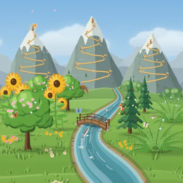
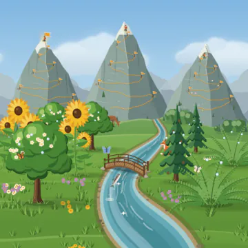
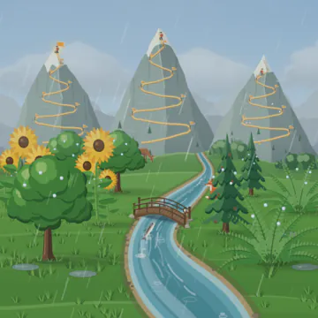
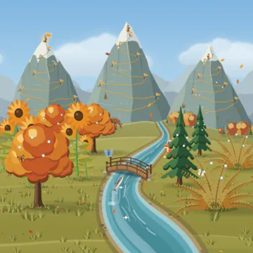
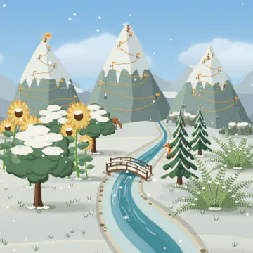
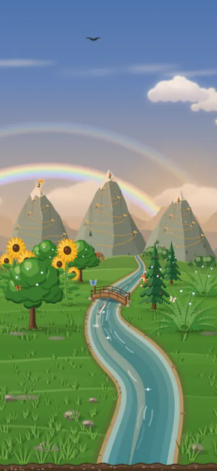
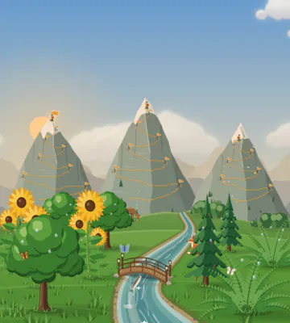

Weather and seasons
Your place and your climate, the seasons, rain and rainbows, and the real sun and moon.
Updated
The valley has real time of day, real seasons and its own weather. This page explains how they work.
- For habits, plants and trails, see How Grove works.
- For the sights you can collect, such as a rainbow or the full moon, see Achievements and unlocks.
Your place
- Grove uses your place for:
- the position of the sun and the moon,
- the times and colours of sunrise and sunset,
- your climate, which sets the seasons and, with them, the rain.
- The first time Grove opens, it asks "Where do you live?". Tap Choose my city, or Skip.
- Change it any time in Settings → Valley and calendar → Your sky. You can:
- search for your city in a list built into the app,
- Enter coordinates: a latitude and a longitude from any map. Grove names the nearest city, or
- Guess from my time zone.
- Grove never reads your phone's location, so it needs no permission. It keeps the place on your phone, and in your backups.
- If you skip, Grove guesses from your phone's time zone.
- It uses latitude 25° north and a longitude from the time zone (the offset in minutes ÷ 4).
- For India (UTC+5:30) this lands in the monsoon climate.
- The guess is always north of the equator. If you live in the south, choose your city, or your seasons will be six months off.
Three climates
Grove picks one of three climates from your place:
Climate Where Monsoon Latitude 5° to 29.5° and longitude 66° to 101°, or latitude 29.5° to 35° and longitude 66° to 79° Southern Everywhere else south of the equator Northern Everywhere else north of the equator, and on it The monsoon area covers India, Pakistan, Bangladesh, Nepal, Sri Lanka, Myanmar and nearby places. North of latitude 29.5° it stops at longitude 79°, so most of Tibet is not in it.
The northern and southern climates have four seasons. The monsoon climate has its own four.
Seasons
Northern climate
| Season | Months |
|---|---|
| Spring | March, April, May |
| Summer | June, July, August |
| Autumn | September, October, November |
| Winter | December, January, February |
Southern climate
- The same four seasons, six months later:
| Season | Months |
|---|---|
| Spring | September, October, November |
| Summer | December, January, February |
| Autumn | March, April, May |
| Winter | June, July, August |
Monsoon climate
| Season | Months |
|---|---|
| Hot summer | March, April, May |
| Monsoon | June, July, August, September |
| After the rains | October, November |
| Mild winter | December, January, February |
What each season looks like





- Spring: fresh green grass, drifts of wildflowers and pink petals falling. Oaks flower pink.
- Summer: deep green grass and summer flowers. Oaks flower cream, and seed heads nod on the tall grass.
- Autumn: orange, gold and red trees on the hills, and falling leaves. Leaves lie on the meadow and under the oaks. Ferns and sunflowers turn autumn colours; pines stay green.
- Winter (northern and southern): snow covers the meadow and the hills, with grass tips poking through. Snow lies on the mountains, the bridge and the plants, the river's edges freeze, and snowflakes fall.
- There are no butterflies, no fireflies and no jumping trout in this winter.
- Hot summer (monsoon climate): dry, sun-bleached grass the colour of straw.
- Monsoon: the greenest grass of the year, and rain on most days.
- After the rains: green grass and some rain.
- Mild winter (monsoon climate): cool green ground. No snow falls in the valley.
- The mountains with your trails keep some snow on top all year. They have the most in winter.
Rain
When it rains
Every day has a fixed rain plan. The same date and season always give the same rain.
- So the sky does not change when you open the app again.
- Everyone in the same season sees the same rain on the same day, at the same local time.
Each shower takes 15 minutes to start and 15 minutes to stop.
The chance of rain depends on the season:
Season Chance on a day When it starts How long Strength Monsoon 80% 1 pm to 5:30 pm 1.5 to 4 h heavy Monsoon, extra spell 40% 8:30 pm to 11 pm, or 4 am to 7:30 am 1 to 3 h light to medium After the rains 30% 2 pm to 6 pm 1 to 2.5 h medium Hot summer 7% 5 pm to 8 pm 0.7 to 1.5 h a strong storm Mild winter 3% 9 am to 6 pm 0.7 to 1.5 h light Spring 22% 8 am to 7 pm 1 to 2.5 h light to medium Summer 10% 2 pm to 7 pm 0.7 to 1.5 h a strong storm Autumn 18% 7 am to 7 pm 1.5 to 3 h light to medium Winter never - - it snows instead A shower late in the evening can go on past midnight.
Your habits change the rain
- Rain is lighter when you have done more of today's habits.
- With nothing done, the rain falls at full strength.
- With half done, it is about 70% as strong.
- Even with one habit left, it is still 40% as strong or more.
- When all of today's habits are done, the rain stops at once.
- Only habits you build count, and today's tasks Coming in 1.2: tasks due today, or moved on from a day that has passed. On a day when nothing is due, the rain falls as planned.
- Rain always brings heavy, grey clouds, and the sun shows only as a pale disc.
- Puddles form on the meadow and rings spread on the river.
- In a heavy shower, the rain hides the falling leaves, petals and snow.
- Rain falls at night too.
Rainbows
- A rainbow only shows when the sun is up.
- You get a rainbow in these cases:
- All habits done on a rainy day: while the rain plan says it should rain, the rain stops and a full rainbow shows.
- All habits done, and a shower ended in the last 1.5 hours: the rainbow fades slowly over those 1.5 hours.
- Just after any shower, even if not everything is done: a softer rainbow for about 35 minutes.

- The rainbow stands opposite the sun, with a faint second bow above it.
- A few clouds stay around the rainbow.
- In the monsoon, afternoon showers are common, so finishing your habits in the afternoon often brings a rainbow.
Clouds
- Clouds show how today is going (see How Grove works):
- With nothing done, the sky is at its cloudiest.
- Finishing habits clears some of the clouds.
- When everything is done, the valley glows golden and the sun shines brighter.
- Rain adds heavy clouds on top of this.
- Clouds turn warm at sunrise and sunset, and dark blue-grey at night.
The sun, the moon and the time of day
- The valley follows the real clock. Morning, day, evening and night have their own light.
- The sun and the moon are where they really are in your sky.
- You look toward the south (toward the north if you live south of the equator). The sun rises on the left and sets on the right.
- Left to right follows how far east or west they are, so right overhead is the middle. In the tropics the moon, and in summer the sun, can pass almost straight overhead; they still glide smoothly across. Added in 1.1
- The higher they are in the real sky, the higher they are in the picture.
- They rise out of the hills and set into them, rather than appearing in the open sky. Added in 1.1

- The sun rises at your real sunrise and sets at your real sunset. The colours of dawn and dusk follow the real sun, not fixed hours. In summer the evening light comes later; in winter it comes earlier.
- The moon is big, and it shows its real phase: new moon, crescent, half, and full moon. By day it is pale.
- At night there are stars, and, except in winter or rain, fireflies.
- Zen mode has a taller sky. On a clear night it shows the Milky Way and, now and then, a shooting star. By day a hawk circles there. A wide window, with the valley beside your habits, shows them too.
- The "Your valley" home-screen widget shows a day picture of your valley from 7 am to 7 pm, and a night picture with the real moon the rest of the time.